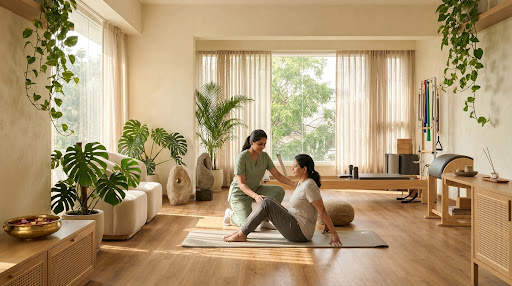
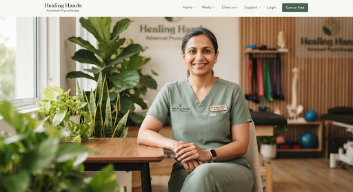
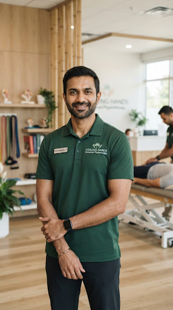
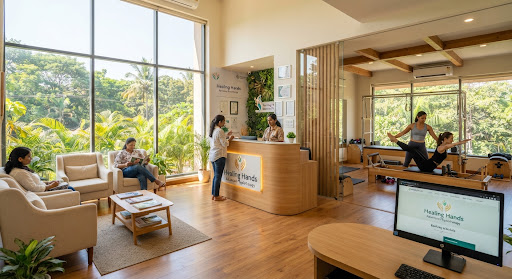

ERGONOMICS · 5 MIN READ
The Biomechanics of Hybrid Desk Work: Counteracting the Bangalore Tech Neck
Why monitor elevation and lumbar micro-breaks save your spinal discs from early degeneration.
By Dr. Ananya Sharma · May 2025
Healing Rooted in Science & Nature. Bengaluru’s premier advanced physiotherapy sanctuary blending precision biomechanics, evidence-based manual therapy, and mindful somatic recovery in peaceful, biophilic treatment suites.

Surgical & chronic pain recoveries guided since 2014
Our biomechanical specialists decode complex kinetic chain imbalances. Select an anatomical region below to examine clinical root causes and targeted evidence-based protocols.
Prolonged forward-head screen carriage exerts up to 27kg of compressive leverage on C5-C7 nerve roots. This causes suboccipital spasms, scapular dyskinesis, and radiating forearm paresthesia prevalent in Bengaluru’s technology sector.
Dr. Ananya Sharma, MPT (Spine & Musculoskeletal)
Every program is structured around one-on-one manual diagnostics, advanced electrotherapy modalities, and biomechanical movement longevity.
Targeted decompression, spinal realignment, posture rehabilitation, and herniated disc recovery via McKenzie & Maitland manual therapy methods.
Neuromuscular retraining, VO2 recovery, return-to-sport testing protocols, functional agility restoration for runners, cyclists, and badminton pros.
Specialized protocols following Total Knee (TKR), Total Hip Replacement (THR), rotator cuff repair, and arthroscopic meniscus reconstruction.
Neuroplasticity acceleration, gait re-education, vestibular balance therapy, and functional motor recovery for Parkinson’s and post-stroke recovery.
Designed for Bengaluru’s engineers and executives. Tech neck reversal, thoracic mobility release, ergonomic desk audits, and sustained postural stamina.
Compassionate pelvic floor rehabilitation, diastasis recti closure, SI joint stabilization during pregnancy, and mindful postpartum strength rebuilds.
We reject temporary masking and 10-minute superficial heat pads. Our journey treats your root kinetic faults for long-term resiliency.
We spend your entire first 45 minutes assessing spinal biomechanics, joint range of motion, muscle length discrepancies, and dynamic gait sensors.
Intensive therapist contact: targeted joint mobilization, fascial release, trigger point dry needling, and Class IV therapeutic laser to calm inflamed nerve pathways.
We fortify your body against recurring injury. Guided clinical Pilates reformer movements, core deep-stabilizer activation, and bespoke home protocols.
“True musculoskeletal recovery requires calm nervous systems. In Bangalore’s fast-paced tech rush, we created a restorative oasis where world-class biomechanics meets unrushed clinical listening.”
Air-purifying flora, non-fluorescent circadian light & soothing acoustics.
Full 45-minute sessions dedicated solely to one patient with zero interruptions.
Class IV high-intensity laser, focused shockwave & digital spinal traction.
Why over 15,200 Bangalore patients trust us over typical crowded hospital physiotherapy departments.
All our clinicians hold Master of Physiotherapy (MPT) degrees with dual accreditations and over a decade of clinical practice.

MPT (Musculoskeletal Disorders & Spine)
Certified Mulligan Practitioner & Dry Needling Expert. Specializes in non-surgical lumbar disc recovery and cervical radiculopathy for tech executives.

MPT (Sports Biomechanics & Orthopedics)
Former physiotherapist for national athletic camps. Specializes in rapid return-to-sport protocols for ACL tears, rotator cuff tears, and running biomechanics.
MPT (Neuro-Rehabilitation & Vestibular)
Specialized in gait re-education, vestibular dizziness management, post-stroke neuromuscular reactivation, and senior functional autonomy rehabilitation.
Serene, accessible locations across South Bengaluru featuring private suites, dedicated valet parking, and state-of-the-art rehabilitation gyms.

From avoiding spinal surgeries to crossing finish lines, hear how our integrative care transformed daily living.
“12 years of sitting as an engineering architect in Bellandur resulted in chronic L5-S1 disc pain. Hospital doctors recommended surgery. Dr. Ananya’s 6-week Mulligan mobilization and kinetic retraining completely reversed my numbness. I am 100% pain-free.”
“Suffered severe IT-band friction and patellar tendinitis two months before the Bengaluru 10K. Dr. Vikram’s dry needling and running gait correction got me back on asphalt without any knee swelling. Finished with a personal best!”
“My mother was fearful of walking after her bilateral knee replacement. The gentle, peaceful environment at JP Nagar and Dr. Meera’s warm encouragement made all the difference. She now climbs stairs independently without any limp.”
Why monitor elevation and lumbar micro-breaks save your spinal discs from early degeneration.
Bed rest is often the worst advice. Discover how safe directional movement decompresses irritated sciatic nerves.
The neurophysiological mechanism behind twitch responses and blood-flow oxygenation in knotted fascia.
Everything you need to know prior to your initial 45-minute clinical consultation.
No, you do not need a prior referral. As licensed Master of Physiotherapy (MPT) practitioners, our clinical specialists are qualified primary-contact therapists trained to perform differential musculoskeletal diagnostics. However, if you already have MRI reports, X-rays, or orthopedic notes, please bring them along.
Yes. Many comprehensive private health insurance providers and corporate wellness policies in Bengaluru cover outpatient physiotherapy rehabilitation. We provide official itemized GST clinical invoices and doctor treatment logs to support quick claim reimbursements.
Most patients report significant symptomatic ease (30% to 50% relief) following their first two sessions due to our focused manual therapy decompression and dry needling techniques. Permanent structural resolution generally takes 4 to 8 weeks as we re-educate your neuromuscular patterns.
We recommend loose, comfortable athletic wear (such as track pants, gym shorts, or t-shirts) that allows our therapists to evaluate joint range of motion and easily palpate affected areas like knees, shoulders, or the spine. Private changing suites are provided in every center.
Book your dedicated 45-minute root-cause assessment with our senior rehabilitation team in BTM Layout, Jayanagar, or JP Nagar today.